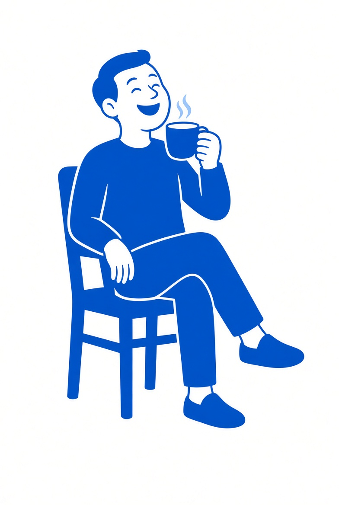
genieten
to enjoy
onregelmatigrang 612Abstract & generalgetekend
genootheeft genoten
- Scene
- one adult sits relaxed on a plain chair with the head tipped back, both eyes closed and a wide open smile; one hand holds a full steaming cup close under the nose, and nothing else is in the room.
- Must read
- a wide closed-eyed smile with a cup held under the nose.
- Avoid
- an open mouth with both hands on the belly and the head thrown back (lachen); a person holding up a cup as a prize (winnen); a fork lifted to an open mouth (eten); a nose bent close to food on a table (ruiken); a sun or a heart drawn above the head.
- Alt text
- Een volwassene zit met het hoofd achterover en de ogen dicht te glimlachen, een volle kop onder de neus.
- Example
- Wij genieten van het mooie weer.
We enjoy the lovely weather.
genieten.png · rang 612 · A2 onregelmatig · lexicon woorden.tsv
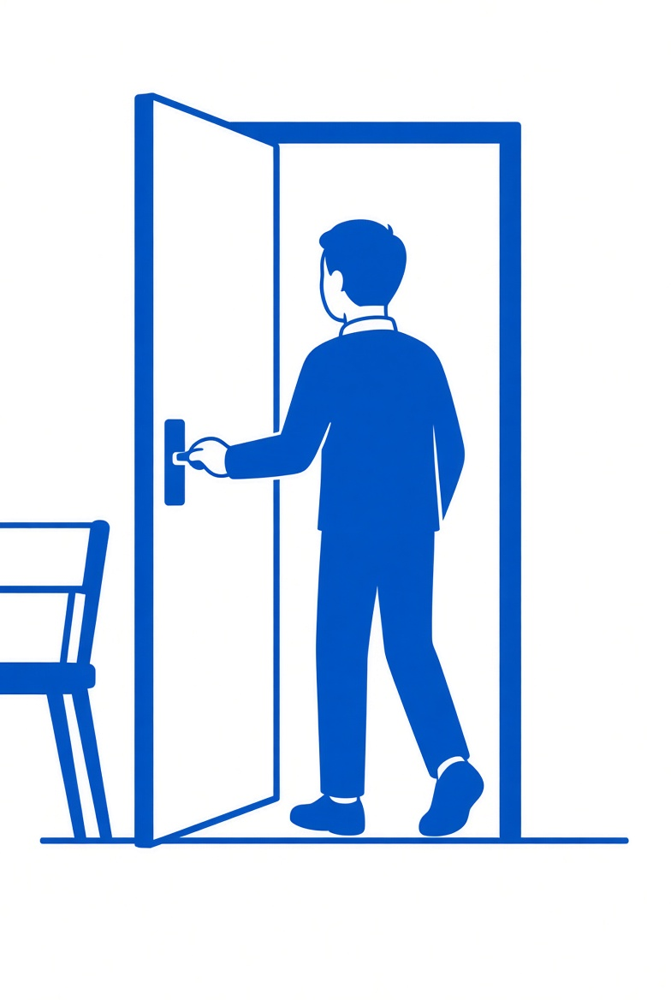
verlaten
to leave (a place)
onregelmatigrang 676Movement & positiongetekend
verlietheeft verlaten
- Scene
- one adult steps through a plain doorway out of a room, seen from behind, one foot already on the far side of the threshold; the near hand pulls the door shut behind them, so the room with one chair inside is only half visible. The direction of travel is out, away from the chair.
- Must read
- a person seen from behind stepping out through a door and pulling it shut.
- Avoid
- both people facing each other across a threshold with two open palms (praten); a person standing still inside a room beside a chair (blijven); a hand laid on a door handle with the body facing the room (sluiten); a person arriving through the door towards the viewer (komen).
- Alt text
- Een volwassene stapt met de rug naar ons door een deuropening naar buiten en trekt de deur achter zich dicht.
- Example
- Wij verlaten het gebouw om vijf uur.
We leave the building at five o'clock.
verlaten.png · rang 676 · A2 onregelmatig · lexicon woorden.tsv

slaan
to hit
onregelmatigrang 774Abstract & generalgetekend
sloegheeft geslagen
- Scene
- one adult stands side-on and swings a flat wooden bat down onto a ball in the air at hip height; both hands grip the handle, the elbows bent, the shoulders turned and the eyes on the ball. The ball has just left the bat and the ground below is empty.
- Must read
- a flat bat swung with both hands at a small ball in the air.
- Avoid
- a hand flat on a door pushing it shut (sluiten); two open palms meeting high above the head (klappen); a hammer on a nail in a plank (hameren); a fist drawn back with nothing in front of it (meppen).
- Alt text
- Een volwassene staat opzij en zwaait een houten slagplank met beide handen naar een balletje in de lucht.
- Example
- Je mag een kind niet slaan.
You must not hit a child.
slaan.png · rang 774 · A2 onregelmatig · lexicon woorden.tsv
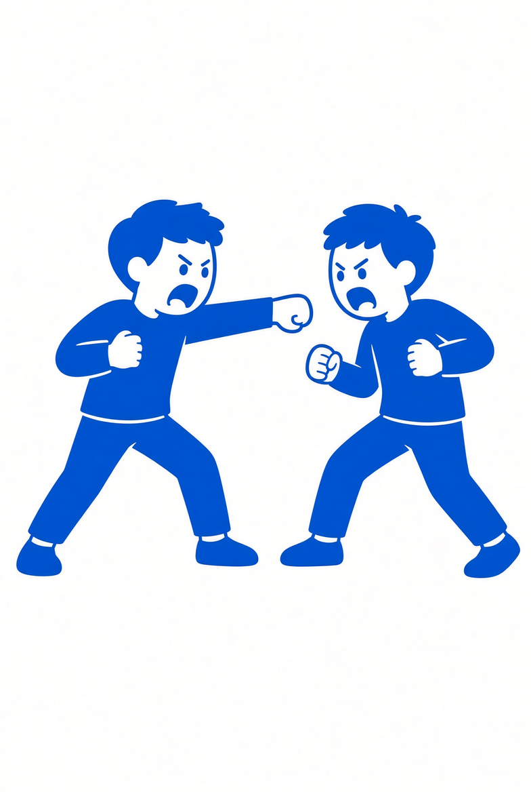
vechten
to fight
onregelmatigrang 1077Abstract & generalgetekend
vochtheeft gevochten
- Scene
- two children stand an arm's length apart in a bare schoolyard, each facing the other with both fists raised and elbows tucked in, one boy already throwing a fist forward so the other leans back out of reach; feet apart and knees bent, mouths open and furious.
- Must read
- a fist thrown by one child while the other pulls back.
- Avoid
- one fist held up alone with a flexed arm (kunnen); a girl lying on the ground and covering her face (vallen); two hands both closed on one long rope (trekken); two children holding hands and smiling (helpen); sticks, knives or any weapon (dreigen).
- Alt text
- Twee kinderen staan tegenover elkaar; een van hen haalt uit met de vuist, het ander leunt achteruit.
- Example
- De jongens vechten op het schoolplein.
The boys are fighting in the playground.
vechten.png · rang 1077 · A2 onregelmatig · lexicon woorden.tsv
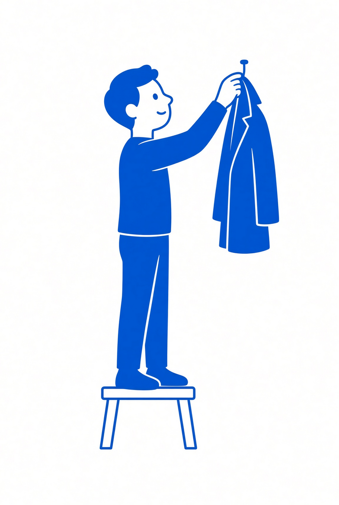
hangen
to hang
onregelmatigrang 1094Abstract & generalgetekend
hingheeft gehangen
- Scene
- one adult stands on a low stool in a bare room and hooks a coat by its loop onto a nail high on a plain wall with one hand; the coat already takes its weight on the nail and the hand is just letting go, both feet on the stool.
- Must read
- a coat taking its weight on a nail as the hand lets go.
- Avoid
- one adult flat on their back on a bed (liggen); a person upright beside a bicycle (staan); clothes folded in a neat pile (leggen); a framed picture on the wall (bekijken); a hook with nothing on it.
- Alt text
- Een volwassene op een krukje schuift met een hand een jas over een spijker hoog aan de muur.
- Example
- De jas hangt aan de haak.
The coat hangs on the hook.
hangen.png · rang 1094 · A2 onregelmatig · lexicon woorden.tsv
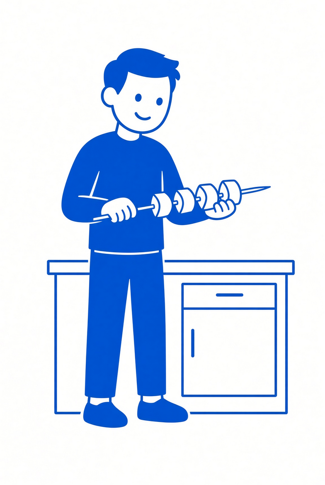
steken
to stick (in)
onregelmatigrang 1133Movement & positiongetekend
stakheeft gestoken
- Scene
- one adult stands at a kitchen counter, full figure head to feet, holding a long thin wooden skewer horizontally in both hands; four large vegetable chunks are already threaded on it and the sharp point sticks out past the last chunk. No knife, no chopping board.
- Must read
- a long skewer with vegetable chunks threaded on it and the point sticking out.
- Avoid
- a knife cutting through a carrot (snijden); a needle taken through cloth (naaien); a fork lifted to the mouth (eten); a key turning in a door (wonen); a spade in the ground (graven).
- Alt text
- Iemand staat aan het aanrecht en houdt met beide handen een lange houten prikker vast met grote stukken groente erop; de scherpe punt komt aan het eind uit.
- Example
- Ik steek de stekker in het stopcontact.
I put the plug into the socket.
steken.png · rang 1133 · A2 onregelmatig · lexicon woorden.tsv
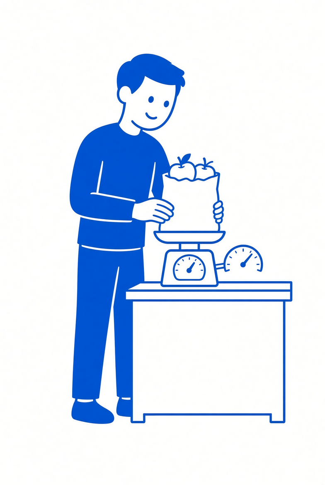
wegen
to weigh
onregelmatigrang 1202Abstract & generalgetekend
woogheeft gewogen
- Scene
- one adult stands at a kitchen counter with a small kitchen scale in front of them, a paper bag of apples resting in its flat pan, the needle of the dial swung round to the right; one hand still steadies the bag and the eyes are on the dial.
- Must read
- a filled bag pulling the needle of a kitchen scale round.
- Avoid
- a hand under the chin and eyes rolled up (denken); two pans on a balance (rechtspreken); a market trader with a note (kopen); a tape measure or a ruler (meten).
- Alt text
- Een volwassene zet een volle zak appels op een keukentoestel met een wijzer en kijkt naar die wijzer.
- Example
- Hoeveel weegt jouw koffer?
How much does your suitcase weigh?
wegen.png · rang 1202 · A2 onregelmatig · lexicon woorden.tsv

bespreken
to discuss
onregelmatigrang 1279Communication & languagegetekend
besprakheeft besproken
- Scene
- Three adults sit around a table with a single sheet of paper in the middle; one has a hand lifted to make a point while the other two lean in, one with a chin on the hand.
- Must read
- Three people round a table, one hand lifted mid-point, the others listening.
- Avoid
- two people chatting without a table (praten); a long meeting with many people (vergaderen); two people with their heads over a laptop (overleggen); a sheet held up to a person (tonen).
- Alt text
- Drie mensen zitten rond een tafel met een vel papier; een van hen heft een hand terwijl de anderen luisteren.
- Example
- We bespreken het plan morgen op kantoor.
We are discussing the plan at the office tomorrow.
bespreken.png · rang 1279 · A2 onregelmatig · lexicon woorden.tsv
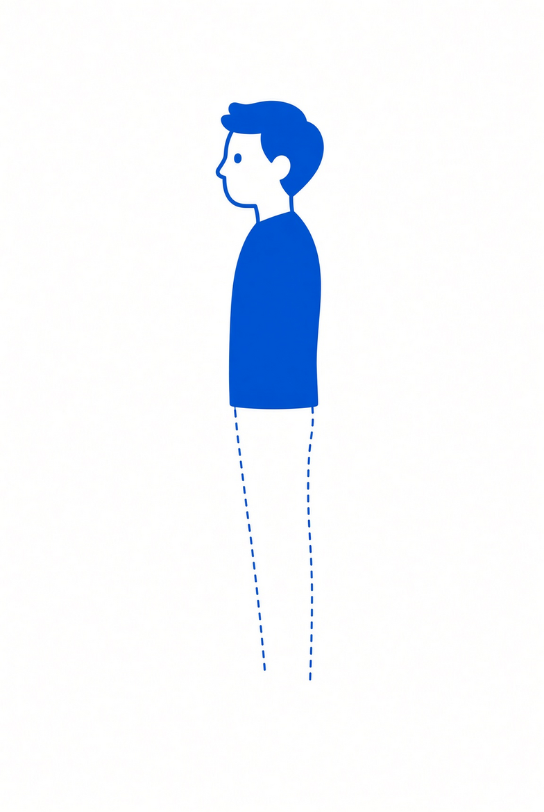
verdwijnen
to disappear
onregelmatigrang 1301Abstract & generalgetekend
verdweenis verdwenen
- Scene
- one adult stands still on a bare floor, seen from the side, full figure head to feet with white margin. The head, chest and arms are drawn solid cobalt; from the waist down the body turns into a thin dashed contour line (plain dashes, no dots, no dot-fill, no gradient) that thins out to nothing at the feet, so the legs and feet are nearly gone. Only the figure; no door, no field, no other object, no symbol.
- Must read
- a standing person whose lower body fades away into a dashed outline.
- Avoid
- a person stepping through a doorway (verlaten); an empty pair of shoes left behind (vergeten); a dove or a ball leaving a hat (toverslaan); a person with an eye to a microscope (onderzoeken); smoke from a fire (branden).
- Alt text
- Iemand staat stil; vanaf het middel naar beneden lost het lichaam op in een stippellijn die bij de voeten bijna weg is.
- Example
- Mijn bril is ineens verdwenen.
My glasses have suddenly disappeared.
verdwijnen.png · rang 1301 · A2 onregelmatig · lexicon woorden.tsv
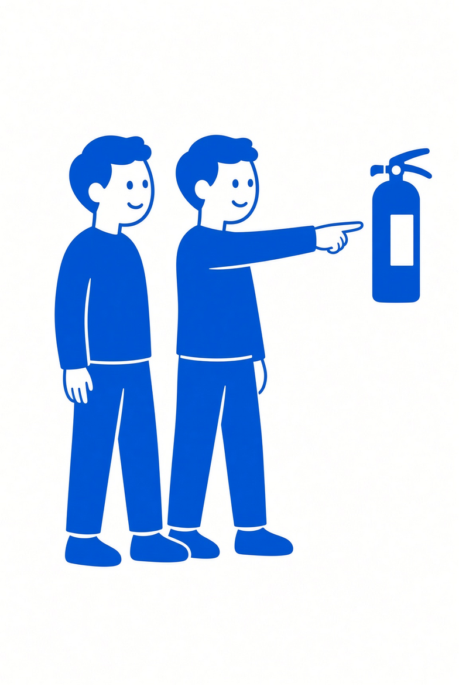
wijzen
to point
onregelmatigrang 1450Movement & positiongetekend
weesheeft gewezen
- Scene
- one adult stands beside a second adult and stretches one arm out straight towards a fire extinguisher fixed to the far wall, the index finger level with it, head turned the same way; the second adult, a step behind and to the side, follows the line of the pointing arm with their eyes.
- Must read
- an outstretched arm with one finger aimed at a wall object.
- Avoid
- an open flat palm held towards a person by a door (mogen); a hand held flat beside the temple to shade the eyes (kijken); a finger raised straight up beside an open mouth (roepen); a hand round a pencil on paper (schrijven); an arrow on a sign (leiden).
- Alt text
- Een volwassene strekt de arm met een gestrekte vinger naar een brandblusser aan de muur, terwijl een tweede persoon meekijkt.
- Example
- Hij wijst naar de kerk.
He points at the church.
wijzen.png · rang 1450 · A2 onregelmatig · lexicon woorden.tsv

lijden
to suffer
onregelmatigrang 1534Abstract & generalgetekend
leedheeft geleden
- Scene
- One adult lies in a bed with the blanket pulled up to the chin, one hand pressed to the forehead, brow creased and mouth turned down; a basin with a cloth stands on a stool beside the bed.
- Must read
- A pained face and a hand on the brow in a bed.
- Avoid
- a person asleep with closed eyes (slapen); a person crying with tears (huilen); a person resting in an armchair (rusten); a person holding a stomach (pijn hebben).
- Alt text
- Iemand ligt in bed met een deken tot de kin en een hand op het voorhoofd; naast het bed staat een kom met een doek.
- Example
- Hij lijdt al jaren aan hoofdpijn.
He has suffered from headaches for years.
lijden.png · rang 1534 · A2 onregelmatig · lexicon woorden.tsv

bedenken
to think up
onregelmatigrang 1696Thought & knowledgegetekend
bedachtheeft bedacht
- Scene
- one adult leans back at a table with eyes turned up and one finger raised; on the table lies a sheet with a half-drawn sketch of a chair.
- Must read
- a raised finger and upturned eyes beside a half-drawn sketch.
- Avoid
- a person reading a book (lezen); a person drawing with the pencil pressed down (tekenen); a person scratching the head with a puzzled face (twijfelen); a person gazing out of a window (staren).
- Alt text
- Iemand kijkt omhoog met een opgestoken vinger naast een half uitgewerkte schets op tafel.
- Example
- Wie heeft dit plan bedacht?
Who thought up this plan?
bedenken.png · rang 1696 · A2 onregelmatig · lexicon woorden.tsv

treden
to tread
onregelmatigrang 1747Movement & positiongetekend
tradis getreden
- Scene
- one adult is drawn in side view on flat ground, one foot lifted and set down a short pace ahead, the back heel raised, arms hanging loosely.
- Must read
- one foot set down a short pace ahead of the other on flat ground.
- Avoid
- several steps in a long row (lopen); a leap with both feet off the ground (springen); a person climbing a staircase (klimmen); a foot stamping hard (stampen).
- Alt text
- Iemand zet in zijaanzicht een voet een klein stukje voor zich neer, de andere hiel omhoog.
- Example
- De man treedt naar voren.
The man steps forward.
treden.png · rang 1747 · A2 onregelmatig · lexicon woorden.tsv

raden
to guess
onregelmatigrang 1801Abstract & generalgetekend
raaddeheeft geraden
- Scene
- one child stands before an adult who holds out both closed fists at chest height; the child points a finger at one of the fists, head tilted and eyes narrowed.
- Must read
- a child's finger pointing at one of two closed fists.
- Avoid
- an adult opening a hand to show a coin (tonen); a child picking one jar from two (kiezen); a child with a finger on the chin looking at the ceiling (denken); a child reaching out to grab a fist (pakken).
- Alt text
- Een kind wijst naar een van twee gesloten vuisten die een volwassene omhooghoudt.
- Example
- Kun je raden wat ik in mijn hand heb?
Can you guess what I have in my hand?
raden.png · rang 1801 · A2 onregelmatig · lexicon woorden.tsv

verslaan
to defeat
onregelmatigrang 1810War & militarygetekend
versloegheeft verslagen
- Scene
- two adults sit facing each other at a plain table with their right hands locked in an arm wrestle; one arm has pushed the other hand flat down onto the table, and the winner's free arm is raised while the loser slumps.
- Must read
- one hand pressed flat on the table by the other in an arm wrestle.
- Avoid
- two adults shaking hands (begroeten); a runner alone crossing a line with arms raised (winnen); two adults pushing at each other (duwen); a person punching a hanging bag (slaan).
- Alt text
- Twee mensen zitten tegenover elkaar aan een tafel; de hand van de een ligt plat op het blad en de ander heft de vrije arm.
- Example
- Ons team heeft de tegenstander verslagen.
Our team has beaten the opponent.
verslaan.png · rang 1810 · A2 onregelmatig · lexicon woorden.tsv

verschijnen
to appear
onregelmatigrang 1837Abstract & generalgetekend
verscheenis verschenen
- Scene
- a door stands half open and a man's head, one shoulder and one arm come out from behind it; a woman seated at a table looks up in surprise.
- Must read
- a figure coming out from behind a half-open door.
- Avoid
- a person walking through a doorway and away (gaan); a person knocking on a closed door (kloppen); a person opening a door wide (openen); a person peeking through a gap (gluren).
- Alt text
- Een man komt half achter een deur vandaan, een vrouw aan tafel kijkt verrast op.
- Example
- Plotseling verschijnt er iemand in de deuropening.
Suddenly someone appears in the doorway.
verschijnen.png · rang 1837 · A2 onregelmatig · lexicon woorden.tsv

liegen
to tell lies
onregelmatigrang 1852Character & behaviourgetekend
loogheeft gelogen
- Scene
- one adult stands facing a second adult with a wide friendly smile; the near arm hangs behind the back so the hand is visible, with the index and middle finger twisted over each other.
- Must read
- a hand behind the back with two fingers twisted over each other.
- Avoid
- two people with a bar each above the head (praten); a hand raised flat in an oath (zweren); a hand behind the back holding a bunch of flowers (verbergen); a finger held to the lips (zwijgen); a nose that grows.
- Alt text
- Iemand glimlacht naar een ander terwijl de hand op de rug twee vingers over elkaar legt.
- Example
- Hij liegt over zijn leeftijd.
He lies about his age.
liegen.png · rang 1852 · A2 onregelmatig · lexicon woorden.tsv

onderhouden
to maintain
onregelmatigrang 1889Abstract & generalgetekend
onderhieldheeft onderhouden
- Scene
- one adult in overalls stands beside a large machine with a big gear wheel showing, one hand holding a small oil can with its spout tilted over the gear and the other hand holding a cloth; one drop hangs at the spout.
- Must read
- an oil can with its spout tilted over a gear of a machine, with a cloth in the other hand.
- Avoid
- a hammer hitting a broken pipe (herstellen); a person turning a handle on a machine (draaien); a person buying a machine at a shop (kopen); a person cleaning a window (poetsen); a machine being carried away (verhuizen).
- Alt text
- Iemand in overall houdt een oliekannetje schuin boven het tandwiel van een grote machine.
- Example
- Mijn vader onderhoudt zelf zijn auto.
My father maintains his car himself.
onderhouden.png · rang 1889 · A2 onregelmatig · lexicon woorden.tsv

verbergen
to conceal
onregelmatigrang 1899Abstract & generalgetekend
verborgheeft verborgen
- Scene
- one adult stands facing a second adult and holds one hand behind the back, the fingers closed round a small key that the second adult cannot see; the free hand rests at the side and the face is calm.
- Must read
- an object held out of sight behind the back.
- Avoid
- a back pressed against a door (zich verstoppen); a hand reaching under a cushion (zoeken); a key held out to a second person (geven); both hands over the eyes (spelen).
- Alt text
- Iemand staat tegenover een ander en houdt een sleutel achter de rug.
- Example
- Het kind wil zich achter de bank verbergen.
The child wants to hide behind the sofa.
verbergen.png · rang 1899 · A2 onregelmatig · lexicon woorden.tsv

verwijzen
to refer
onregelmatigrang 2016Abstract & generalgetekend
verweesheeft verwezen
- Scene
- one adult stands beside a post that carries a single arrow-shaped board with no writing; one arm is stretched out straight in the same direction as the arrow, and a second adult with a bag on one shoulder looks that way.
- Must read
- an arm and an arrow-shaped board pointing the same way.
- Avoid
- a person pointing at a distant bird (wijzen); a person walking along a path (lopen); a person reading an open map (bekijken); a person holding a door open (openen); writing on the board.
- Alt text
- Iemand staat naast een paal met een pijlvormig bord en strekt een arm uit in dezelfde richting, een ander kijkt mee.
- Example
- De dokter verwijst me naar een specialist.
The doctor refers me to a specialist.
verwijzen.png · rang 2016 · A2 onregelmatig · lexicon woorden.tsv

bidden
to pray
onregelmatigrang 2065Religion & beliefgetekend
badheeft gebeden
- Scene
- one adult kneels beside a bed with both elbows resting on the mattress edge and both hands pressed palm to palm under the chin, eyes closed and head bowed; a short plain candle with a small flame burns on the bedside table and nothing else is in the room.
- Must read
- two palms pressed together under a bowed head.
- Avoid
- two hands clasped beneath a small umbrella (hopen); a person on a chair with the chin on a fist (denken); a figure seated before a computer (werken); a stained cross, a mosque or a church window (geloven); a rosary with beads.
- Alt text
- Een volwassene knielt bij een bed met de handen tegen elkaar onder de kin, ogen dicht, naast een kaars.
- Example
- Zij bidden elke avond voor het eten.
They pray every evening before dinner.
bidden.png · rang 2065 · A2 onregelmatig · lexicon woorden.tsv

ontwerpen
to design
onregelmatigrang 2080Arts & mediagetekend
ontwierpheeft ontworpen
- Scene
- one adult stands at a tilted drawing table, a pencil in one hand on a large sheet that holds the half-drawn outline of a chair, the other hand pressing a long ruler against the sheet.
- Must read
- a chair outline half drawn on a large sheet with a ruler beside it.
- Avoid
- a person drawing a portrait (tekenen); a person sawing a real chair (zagen); a person sitting on a chair (zitten); a person measuring a chair with a tape (meten).
- Alt text
- Iemand staat bij een schuine tafel en tekent met potlood de omtrek van een stoel op een groot vel.
- Example
- Zij ontwerpt een nieuwe stoel.
She is designing a new chair.
ontwerpen.png · rang 2080 · A2 onregelmatig · lexicon woorden.tsv

besluiten
to decide
onregelmatigrang 2178Thought & knowledgegetekend
beslootheeft besloten
- Scene
- one adult stands at a place where a path splits into two; one arm is stretched out straight down the right-hand branch, the other fist is on the hip, the feet are already turned that way and the chin is up.
- Must read
- a stretched arm and turned feet toward one branch of a forked path.
- Avoid
- a person looking at both branches with a finger at the chin (overwegen); a person walking along a straight path (lopen); a person pointing at a distant tree (wijzen); a signpost with an arrow (verwijzen).
- Alt text
- Iemand staat bij een splitsing in het pad en strekt een arm uit naar één kant, de voeten al die kant op gedraaid.
- Example
- Ik besluit om morgen te beginnen.
I decide to start tomorrow.
besluiten.png · rang 2178 · A2 onregelmatig · lexicon woorden.tsv

onthouden
to remember
onregelmatigrang 2196Thought & knowledgegetekend
onthieldheeft onthouden
- Scene
- One adult sits at a desk with eyes shut and one finger pressed to the temple, a page of lines of scribbles lying beside the other hand.
- Must read
- Shut eyes and a finger at the temple beside a page of scribbled lines.
- Avoid
- a person reading with an open book (leren); a person with a chin on a hand (denken); a person shrugging with empty hands (vergeten); a head resting on a desk (slapen).
- Alt text
- Iemand zit met gesloten ogen en een vinger tegen de slaap naast een vel met rijen krabbels.
- Example
- Ik kan zijn telefoonnummer niet onthouden.
I cannot remember his phone number.
onthouden.png · rang 2196 · A2 onregelmatig · lexicon woorden.tsv

laden
to load
onregelmatigrang 2224Transport & travelgetekend
laaddeheeft geladen
- Scene
- one worker lifts a box up into the open back of a van; a second box stands ready on the ground beside the van.
- Must read
- a box lifted up into the open back of a van.
- Avoid
- a box carried out of a van (lossen); a box carried along the pavement (dragen); boxes stacked on the ground (stapelen); a van driving off (rijden).
- Alt text
- Iemand tilt een doos de open achterkant van een bestelwagen in; een tweede doos staat klaar.
- Example
- De man laadt de dozen in de bus.
The man loads the boxes into the van.
laden.png · rang 2224 · A2 onregelmatig · lexicon woorden.tsv
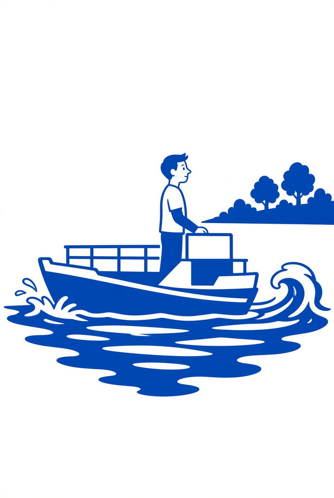
varen
to sail (a boat, a ferry)
onregelmatigrang 2238Transport & travelgetekend
voerheeft/is gevaren
- Scene
- a small car ferry crosses a wide river, seen from the side, with a low bow wave and a curl of wake behind; one adult stands at the rail on deck looking across the water to the far bank. No sail and no flag.
- Must read
- a ferry under way on a river with a wake behind.
- Avoid
- a sail curved by the wind (zeilen); a rower with both oars in the water (roeien); a swimmer (zwemmen); a boat tied up at a jetty (aanmeren); a person on a bridge over the river (lopen).
- Alt text
- Een veerpont steekt een brede rivier over; iemand staat aan de reling en kijkt naar de overkant.
- Example
- De veerboot vaart elk uur naar het eiland.
The ferry sails to the island every hour.
varen.png · rang 2238 · A2 onregelmatig · lexicon woorden.tsv

vermijden
to avoid
onregelmatigrang 2241Abstract & generalgetekend
vermeedheeft vermeden
- Scene
- one adult walks on a pavement and swings one foot in a wide arc around a round puddle that spreads across the stones, the body leaning away from the puddle with the eyes on it.
- Must read
- one foot swinging wide around a round puddle.
- Avoid
- a person jumping over a puddle with both feet off the ground (springen); a person stamping in a puddle (stampen); a person walking straight through it (lopen); a person standing at the edge and looking (kijken); a umbrella.
- Alt text
- Iemand zwaait een voet in een grote boog langs een ronde plas op de stoep.
- Example
- Hij vermijdt de plas op de stoep.
He avoids the puddle on the pavement.
vermijden.png · rang 2241 · A2 onregelmatig · lexicon woorden.tsv

heten
to be called
onregelmatigrang 2367Abstract & generalgetekend
heetteheeft geheten
- Scene
- one adult stands facing a second adult with a flat hand laid on their own chest and a smile; the second adult leans in a little with one hand held out to shake, also smiling; both stand upright on plain ground and nothing else is in the frame.
- Must read
- one hand flat on the own chest while another person holds out a hand to shake.
- Avoid
- two people waving hello (begroeten); two people with a bar each above the head (praten); a person pointing at another person (wijzen); a hand holding a card with writing; a speech bubble.
- Alt text
- Iemand legt een hand op de eigen borst terwijl een ander een hand uitsteekt.
- Example
- Ik heet Anna.
My name is Anna.
heten.png · rang 2367 · A2 onregelmatig · lexicon woorden.tsv

ontbreken
to be missing
onregelmatigrang 2372Abstract & generalgetekend
ontbrakheeft ontbroken
- Scene
- on a table lies a nearly finished jigsaw puzzle with one square hole in the middle, the missing piece nowhere in the picture.
- Must read
- a jigsaw puzzle with one empty square hole in the middle.
- Avoid
- a person searching under a table (zoeken); a hand placing the last piece (leggen); a piece falling off a table (vallen); an empty chair at a table (missen).
- Alt text
- Op een tafel ligt een bijna afgemaakte legpuzzel met een leeg gat in het midden.
- Example
- Er ontbreekt een stukje.
A piece is missing.
ontbreken.png · rang 2372 · A2 onregelmatig · lexicon woorden.tsv

verblijven
to stay
onregelmatigrang 2418Abstract & generalgetekend
verbleefheeft verbleven
- Scene
- One adult stands inside a small hotel room by a window with a hand on the curtain; an open suitcase lies on the bed and a bedside lamp stands on a small table.
- Must read
- An open suitcase on a bed in a small room with a window.
- Avoid
- a person walking with a suitcase (reizen); a person asleep in a bed (slapen); a family at the door of a house (wonen); a person sitting still at a bus stop (wachten).
- Alt text
- Iemand staat bij een raam in een kamer met een open koffer op het bed.
- Example
- We verblijven drie nachten in een hotel aan zee.
We are staying three nights in a hotel by the sea.
verblijven.png · rang 2418 · A2 onregelmatig · lexicon woorden.tsv

bestrijden
to combat
onregelmatigrang 2426Law & conflictgetekend
bestreedheeft bestreden
- Scene
- one adult in a helmet stands braced with both hands on a hose and aims a stream of water at flames in a window of a small house; the stream arcs from the nozzle to the window.
- Must read
- an adult in a helmet aiming a stream of water from a hose at flames in a window.
- Avoid
- a person pouring water into a glass (gieten); a person watering a plant (gieten); a building falling apart (vernietigen); a person running away from flames (vluchten).
- Alt text
- Iemand met een helm richt een slang met een straal water op vlammen in een raam.
- Example
- De brandweer bestrijdt de brand.
The fire brigade fights the fire.
bestrijden.png · rang 2426 · A2 onregelmatig · lexicon woorden.tsv
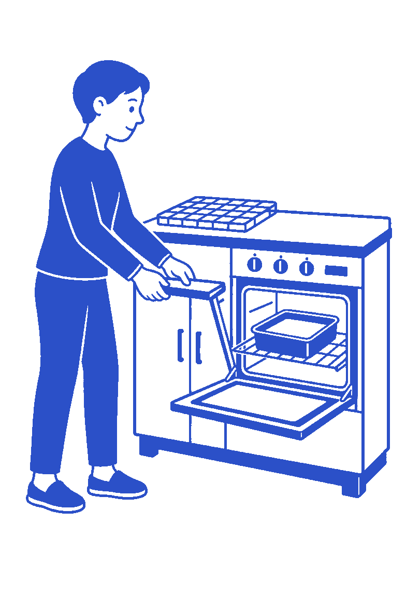
bakken
to bake
onregelmatigrang 2510Food & drinkgetekend
bakteheeft gebakken
- Scene
- One adult stands at a kitchen counter with both hands on the handle of an open oven door, pulling it down; a square tin of batter sits on the shelf inside, the rim already risen, and a wire rack waits empty on the counter beside the oven. Keep the whole oven and counter inside the frame with clear white margin on every side; the counter must not run off the right edge; the empty wire rack is visible on the counter beside the oven, not only inside it.
- Must read
- an open oven with a raised tin of batter on the shelf.
- Avoid
- a closed oven door with the tin already gone from view; a hand turning a knife through a carrot on a board (snijden); a pot on a lit stove with a spoon (koken); a plain tin of batter standing cold on the bare counter.
- Contrast
- Pair with koken. Same kitchen: a tin of batter goes into the open oven here, the food turns in a pan on the hob there.
- Alt text
- Een volwassene trekt met twee handen de ovendeur open; binnen staat een blik met gerezen beslag.
- Example
- Ik bak vanmiddag een taart.
I am baking a cake this afternoon.
bakken.png · rang 2510 · A2 onregelmatig · lexicon woorden.tsv
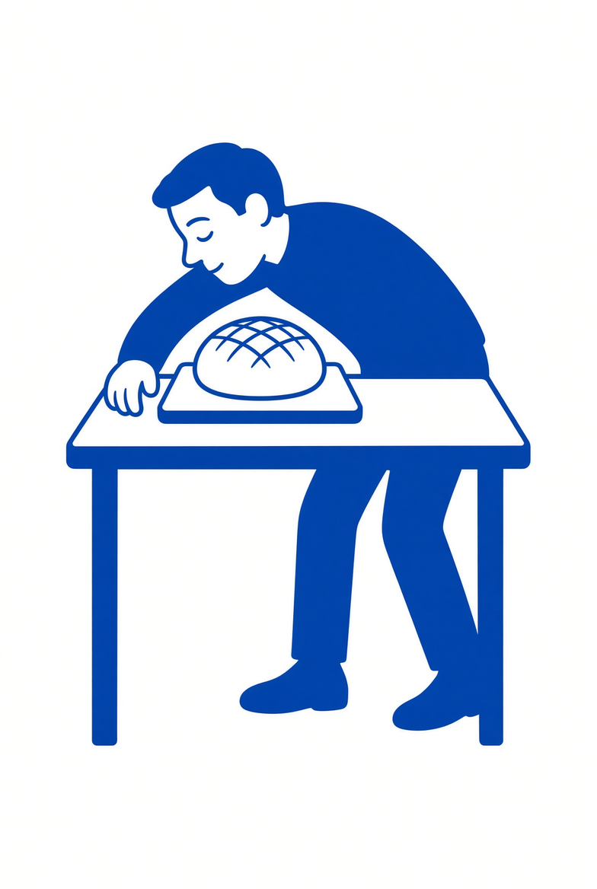
ruiken
to smell
onregelmatigrang 3255Body & healthgetekend
rookheeft geroken
- Scene
- One adult stands bent forward over a plain table, the nose a hand-width from a fresh round loaf of bread lying on a wooden board, the eyes shut and the chin lifted slightly; no second person and no other food in the frame.
- Must read
- an adult's nose close to a loaf with the eyes shut.
- Avoid
- open lips at a tilted glass (drinken); a knife through the loaf (snijden); a person holding a slice of bread up to the eyes (kijken); a finger pressed into the crust (voelen); a person leaning back with a cup under the nose and a wide smile (genieten).
- Contrast
- Pair with proeven. Same kitchen and the same cook: the nose goes close to the loaf here, the tongue meets a raised spoon there.
- Alt text
- Een volwassene buigt met gesloten ogen naar een vers brood op een plank.
- Example
- Ik ruik verse koffie in de keuken.
I smell fresh coffee in the kitchen.
ruiken.png · rang 3255 · A2 onregelmatig · lexicon woorden.tsv
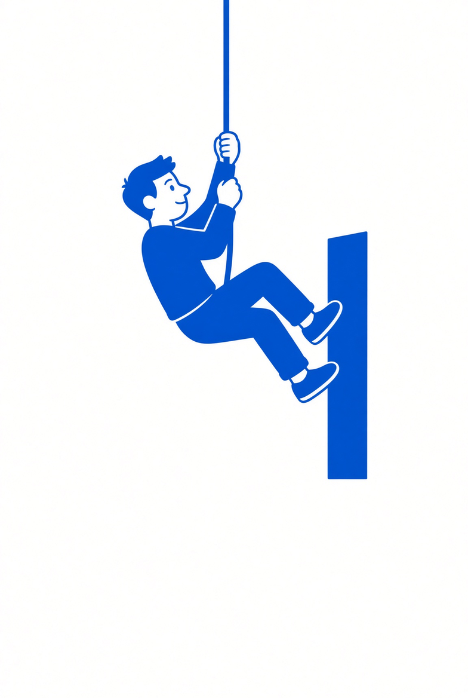
klimmen
to climb
onregelmatigrang 3293Movement & positiongetekend
klomheeft/is geklommen
- Scene
- One adult grips a rope with both hands a little above the head and hangs from it, both feet braced flat on a wall, the body halfway up the wall with the arms bent; the rope runs on out of the top of the frame and the ground is far below.
- Must read
- a body hanging on a rope with both feet flat on a wall.
- Avoid
- one foot planted on the next step of a staircase (stijgen); a hand touching the top stair's handrail (bereiken); both feet off the ground in one leap (springen); a body flat on the floor on hands and knees (kruipen).
- Alt text
- Een volwassene hangt met twee handen aan een touw, beide voeten tegen een muur, halverwege.
- Example
- De kinderen klimmen in de hoge boom.
The children climb the tall tree.
klimmen.png · rang 3293 · A2 onregelmatig · lexicon woorden.tsv

schenken (drank)
to pour (a drink)
onregelmatigrang 3894Money & tradegetekend
schonkheeft geschonken
- Scene
- One adult stands at a laid table and pours a drink from a bottle into a glass standing in front of a seated guest. The stream is caught mid-air, the glass a third full. The guest watches the glass. A second empty glass stands on the table.
- Must read
- a bottle pouring a stream into a guest's glass.
- Avoid
- a note dropped into a donation chest (schenken); a glass raised for a toast (proosten); a person drinking from a glass (drinken); water poured from a bucket over plants (gieten); coffee made in a machine (zetten).
- Alt text
- Een volwassene giet vanuit een fles een straal drank in het glas van een gast die aan tafel zit.
- Example
- Mag ik je nog een glas schenken?
May I pour you another glass?
schenken-drank.png · rang 3894 · A2 onregelmatig · lexicon woorden.tsv
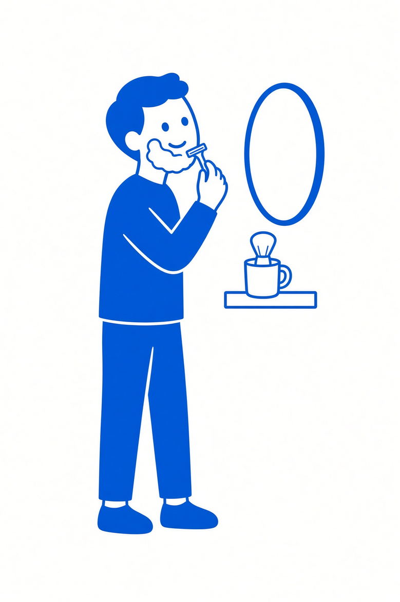
scheren
to shave
onregelmatigrang 4118Body & healthgetekend
schoorheeft geschoren
- Scene
- One adult stands facing a small round wall mirror, head tilted, drawing a razor down one lathered cheek with the hand moving away from the ear; a shaving brush stands in a mug below the mirror and a strip of bare skin shows behind the passing blade.
- Must read
- a razor drawn down a white lathered cheek.
- Avoid
- an open pocket knife held over a carrot on a board (snijden); a comb drawn through the hair; a brush on paper (tekenen); a face without lather seen in a mirror (kijken); a second person with scissors at the back of the head.
- Alt text
- Een volwassene haalt een mesje over een met schuim bedekte wang, voor een spiegel.
- Example
- Mijn vader scheert zich elke ochtend.
My father shaves every morning.
scheren.png · rang 4118 · A2 onregelmatig · lexicon woorden.tsv
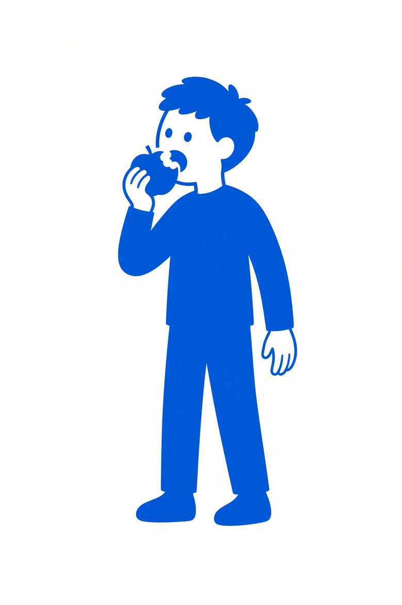
bijten
to bite
onregelmatigrang 4142Animalsgetekend
beetheeft gebeten
- Scene
- One adult holds a whole round apple up to the open mouth with one hand, the front teeth already sunk in and a bite missing from the top; the jaw is still closed on the apple, one cheek bulged, and the other hand hangs open at the side; no knife and no plate in the picture.
- Must read
- teeth sunk into a whole apple with a bite out of it.
- Avoid
- a fork lifting a piece of meat to an open mouth (eten); a knife pressed through a carrot on a board (snijden); an apple lying untouched on a table (hebben); a split in a piece of cloth.
- Alt text
- Een volwassene heeft de tanden in een hele appel gezet; er ontbreekt een hap.
- Example
- Pas op, die hond kan bijten.
Be careful, that dog can bite.
bijten.png · rang 4142 · A2 onregelmatig · lexicon woorden.tsv

strijken
to iron
onregelmatigrang 5428House & homegetekend
streekheeft gestreken
- Scene
- a rectangular ironing board seen from above with a plain flat shirt shape lying on it and a triangular iron outlined in the middle of the shirt; the left half of the shirt is smooth and blank and the right half has three bold crease lines; no face, no hood, no figure; nothing else.
- Must read
- an iron between the smooth half and the creased half of one shirt.
- Avoid
- a tall pile of shirts beside a scowling man (een hekel hebben aan); a T-shirt folded in half on a table (vouwen); wet washing hung on a line (ophangen); a wet cloth twisted between two fists (wringen).
- Alt text
- Iemand gaat met een heet ijzer over een overhemd op een plank; achter het ijzer is de stof glad.
- Example
- Hij moet nog zijn overhemd strijken voor het interview.
He still has to iron his shirt for the interview.
strijken.png · rang 5428 · A2 onregelmatig · lexicon woorden.tsv

fluiten
to whistle
onregelmatigrang 5464Arts & mediagetekend
flootheeft gefloten
- Scene
- one adult walks along with both hands in the pockets and the lips pursed into a small round shape; two short curved lines come away from the lips, and the cheeks are slightly hollow. Nobody else is in the picture and the street is empty.
- Must read
- pursed lips with two short curved lines coming away from them.
- Avoid
- an open mouth with curved lines and a hand on the chest (zingen); cupped hands round an open mouth (roepen); a mouth close to an ear (fluisteren); a pursed mouth beside a candle flame (blazen); a whistle on a cord.
- Alt text
- Iemand loopt met de handen in de zakken en de lippen getuit; twee korte boogjes komen van de mond.
- Example
- De scheidsrechter fluit voor een overtreding.
The referee blows the whistle for a foul.
fluiten.png · rang 5464 · A2 onregelmatig · lexicon woorden.tsv

glijden
to slide (down)
onregelmatigrang 5930Sport & gamesgetekend
gleedheeft/is gegleden
- Scene
- one child goes down a playground slide feet first, arms up and hair streaming back; the child is halfway down the slope and the ladder stands behind. No other child is on the slide, and the ground at its foot is bare sand.
- Must read
- a child halfway down a slide.
- Avoid
- a child on a seesaw (wippen); a drawer pushed shut with one palm (schuiven); a skier on a slope (skiën); a child going up a ladder (klimmen).
- Alt text
- Een kind zit halverwege de schuine baan van een speeltoestel, de voeten vooruit en de armen omhoog.
- Example
- De kinderen glijden van de glijbaan.
The children slide down the slide.
glijden.png · rang 5930 · A2 onregelmatig · lexicon woorden.tsv